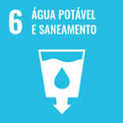
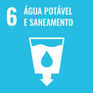

Objetivos de Desenvolvimento Sustentável (ODS) da Onu
Os objetivos de desenvolvimento sustentável são um conjunto de 17 metas estabelecidas pela Organização das Nações Unidas (ONU) para abordar uma variedade de desafios socioeconômicos e ambientais até 2030. Assim, criar um mundo mais justo, inclusivo e ambientalmente consciente. 1 2
Todas as 17 metas estão abaixo, clique na imagem para maiores informações.


 
